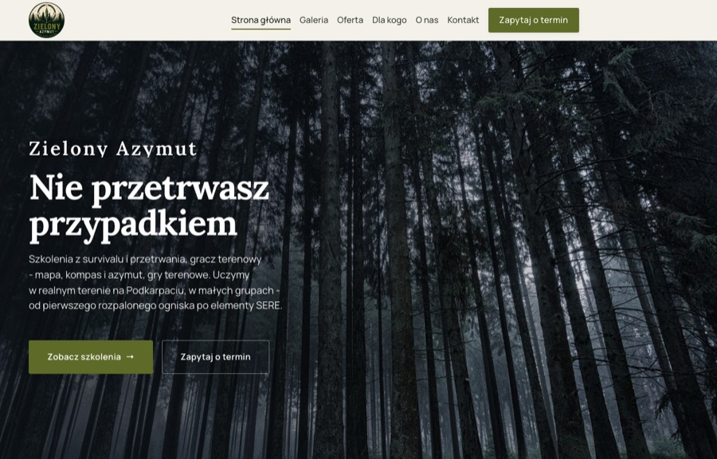
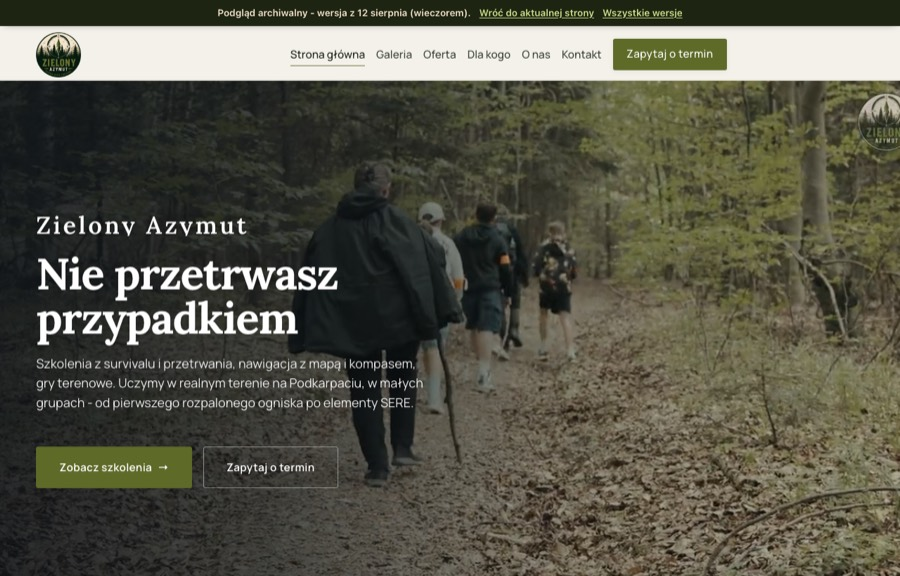
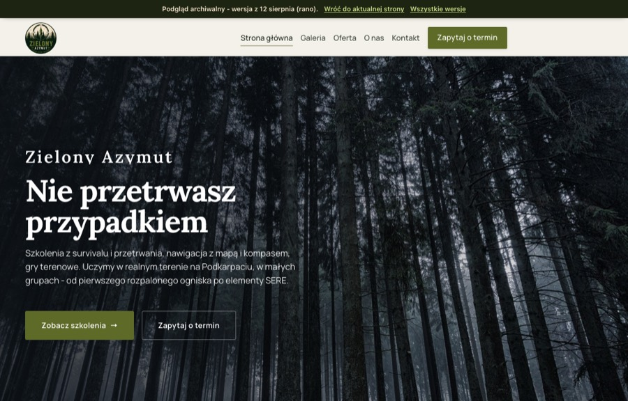
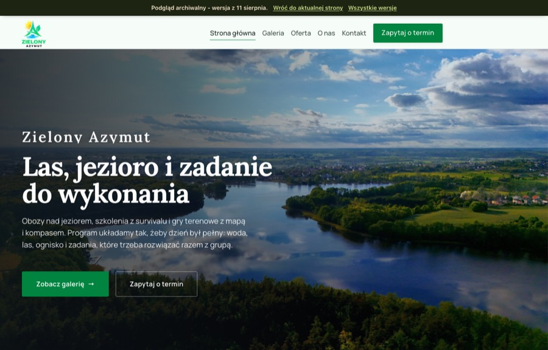

Każda wersja zostaje pod własnym adresem, więc można je porównać obok siebie i w każdej chwili wrócić do wcześniejszego pomysłu. Adres aktualnej strony się nie zmienia.

Tło hero wróciło na las, poprawiony dolny pasek na telefonie, „gracz terenowy” w ofercie.
Tę widzi każdy, kto wejdzie na link
Pierwsza wersja na materiałach z Dysku: 20 zdjęć, film z gry „Kod Da Vinci”, w hero kadr z grupą na ścieżce.
Podgląd archiwalny
Wersja po rebrandingu: logo, plakat i paleta klienta, tło hero na lesie.
Podgląd archiwalny
Obozy i zajęcia dla dzieci - zanim doszły materiały o szkoleniach survivalowych.
Podgląd archiwalny